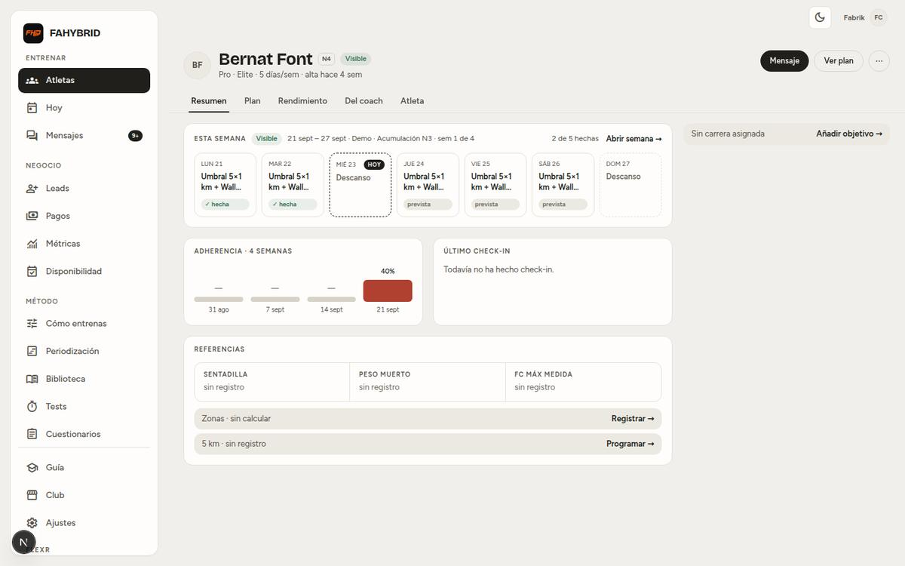
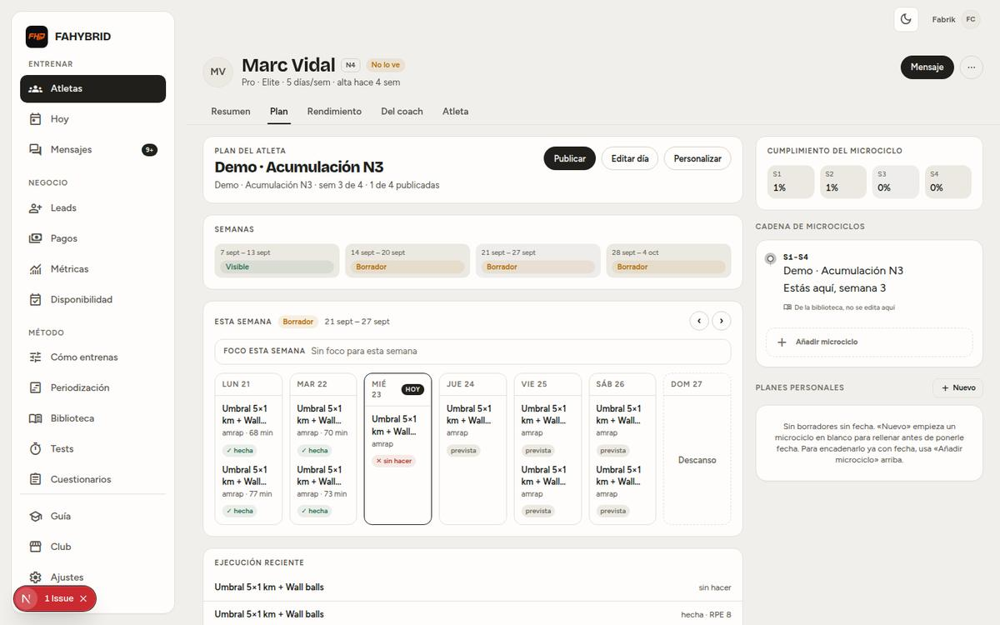
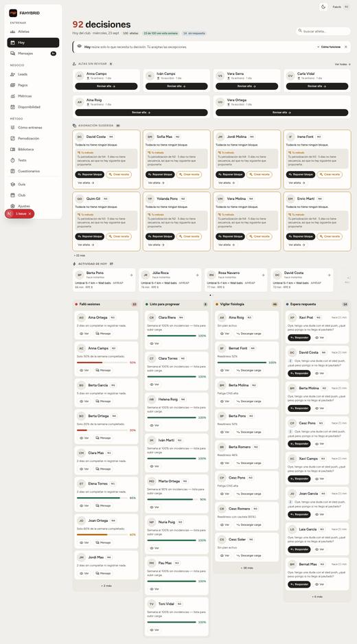
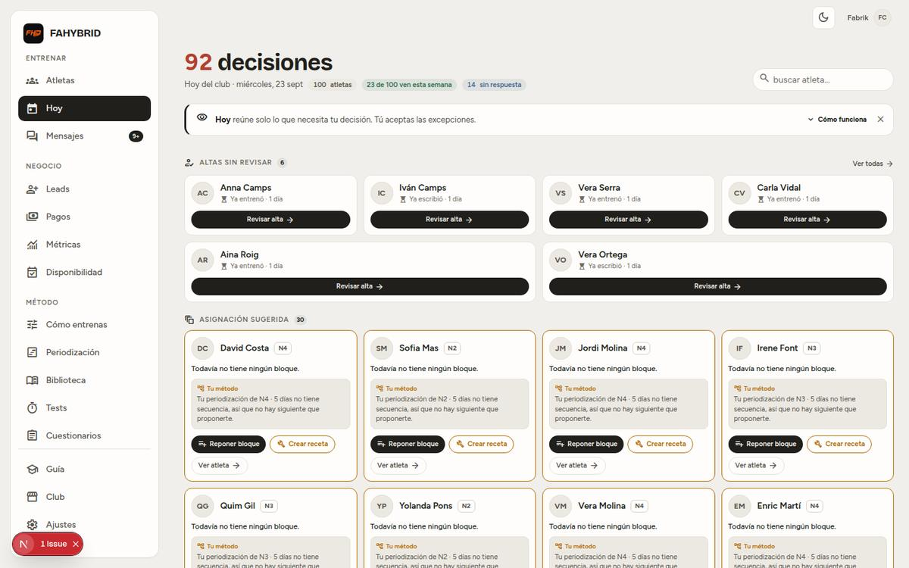
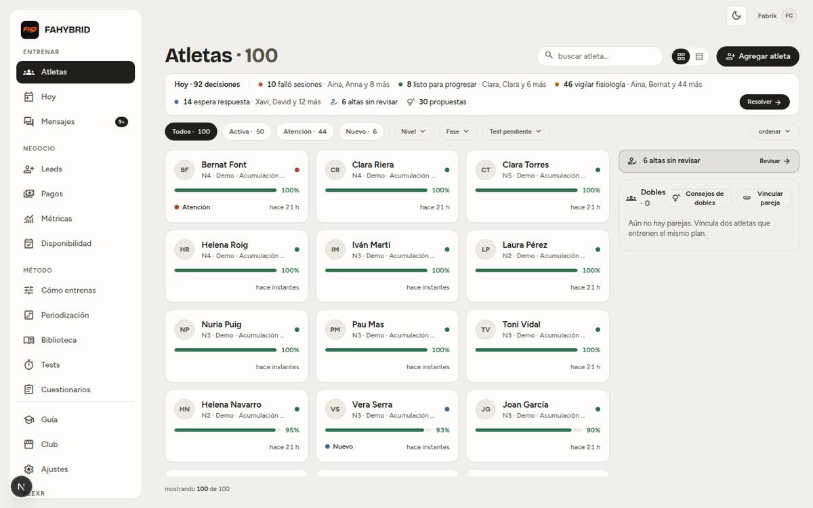
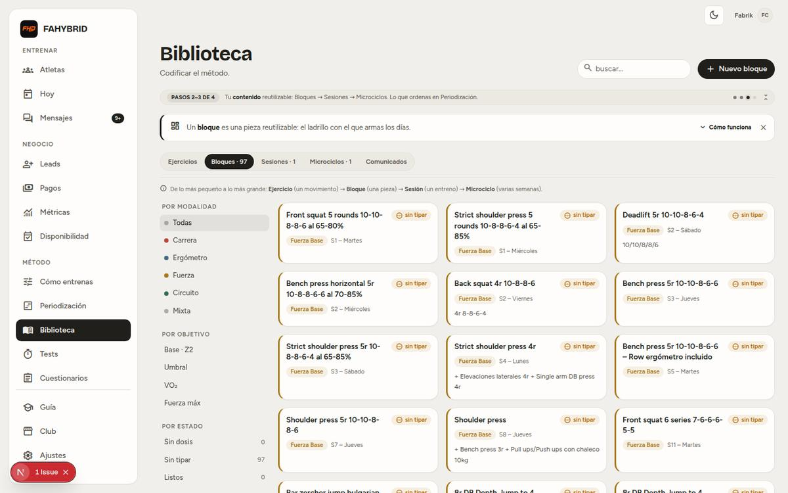
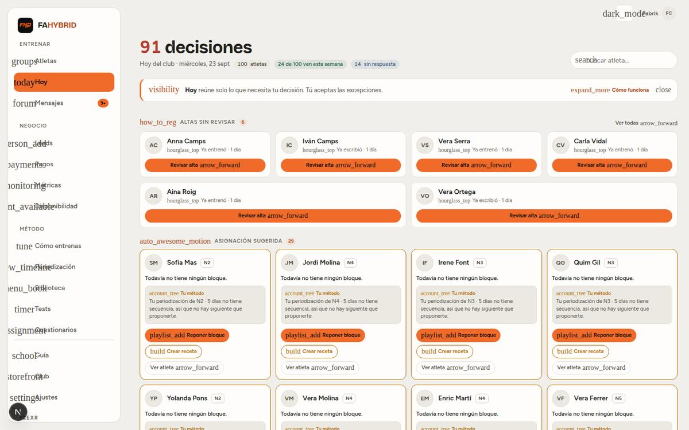
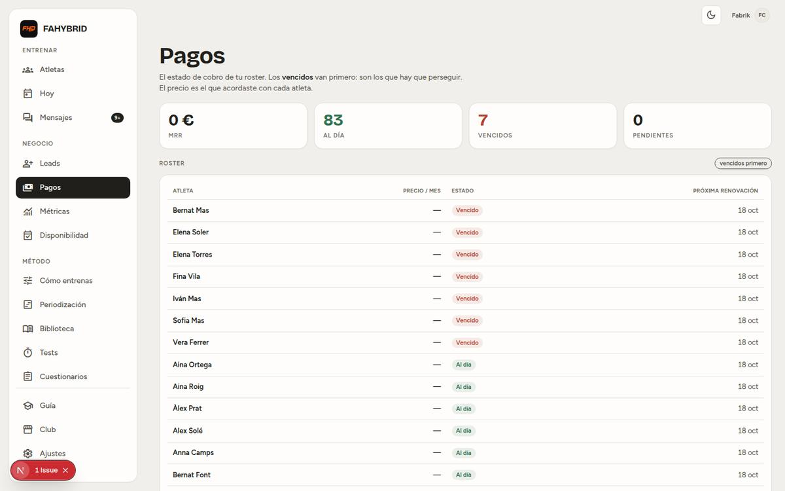

Can one coach run 100 athletes on this panel?
Not yet. I ran the whole dashboard locally with 100 athletes. The screens are well made one by one, but together they don't do the coach's three jobs: see who needs you today, act on many athletes at once, and build and change a plan where you're looking at it. Below is what I found, the evidence, and a rebuild proposal, with the decisions only you can make at the end.
The short version
You said you don't like how it looks. The look is part of it, but the bigger problem is underneath: the panel is organised around the data model and around features added over time, not around what a coach does in a day. In practice:
- Hoy says "92 decisiones" for 100 athletes. It covers 70 different people shown on 114 cards, and nothing can be marked done or snoozed, so the list never gets shorter. The project's own spec for Hoy promised 8–15 items that go down to zero.
- The numbers contradict each other. For the same athlete and week, one screen says 100%, another 40% in red with "cayendo", and a third says "1%". A coach who can't trust what they're scanning goes back to WhatsApp.
- You can't act at scale. Building a 4-week block and giving it to 20 athletes takes about 500 clicks across 9 screens; a spreadsheet does it in 15 minutes. There's no multi-select, no keyboard, no search box, and filters reset when you go back. On the athlete page you can't move a session, add one, or open any day except today.
- There is no design system actually in use. There are 553 hand-styled buttons and the shared Button component is used 5 times. That gives about 140 button looks and 30+ font sizes, with half the text under 12 px.
- Some of it isn't ready for a second coach: leads and metrics aren't separated by coach, Pablo's name is in copy that other coaches' leads would see, and payments go to one Stripe account.
The good news: the hard parts are already built. The backend for an inbox that goes down to zero exists: attention items, snooze, bulk actions, broadcast. So do athlete search, moving a session, adding a session, bulk plan changes with preview and rollback, and an undo history for the editor. No screen uses any of them. A lot of the rebuild is connecting what's already there to screens designed around the coach's day.
My recommendation: rebuild the panel's screens from scratch on a small set of foundations: one signal engine, one adherence formula, one status model, and a real component library. Keep the backend, the colour tokens, the club-colour mechanism and a handful of good screens. Start with Hoy, Atletas and the athlete page, because the 100-client goal lives or dies there. I need seven decisions from you before the mockups become a build.
How I tested it
I didn't want to judge the panel from code or from an empty account. I ran the real dashboard in a disposable local copy: all 213 database migrations, the project's demo seed scaled up to 100 athletes (about 70 with a 4-week block assigned through the app's own API, about 1,100 logged sessions, readiness, unread messages, overdue payments, pending intakes) and your real 97-block library imported from the spreadsheet. Then five auditors each took one area in parallel: triage and roster, athlete page, programming, navigation and secondary screens, visual system and performance. They took their own screenshots, clicked through flows and read the code behind each screen. I checked every headline claim in this document against the code myself before including it.
Limits: the demo data is synthetic, so some numbers (like how many athletes have low readiness) are random. I judged how the design behaves at that scale, not the numbers themselves. There was no heart-rate, pace or GPS data, so the performance charts were judged from their empty states and code. Timings are from a local dev server: use them as relative, not absolute.
Scorecard
Area by area. Keep means polish only. Rework means same idea, rebuilt. Rebuild means the idea itself has to change.
| Area | Verdict | The one-line reason |
|---|---|---|
| Hoy (daily triage) | Rebuild | A wall of 114 cards that never gets shorter. It should be one list that goes down to zero. |
| Atletas (roster) | Rework | Cards show 12 of 100 athletes, sorted with the healthiest first. It needs a dense table with saved views and bulk actions. |
| Athlete page | Rebuild | 12 views in 3 levels, numbers that disagree, and no way to edit the plan from where you see it. |
| Mensajes | Rework | Good 3-pane chat, but "read" counts as "answered", and other screens open the wrong conversation. |
| Programming & library | Rebuild | Strong engine, wrong workflow: about 500 clicks to give a 4-week block to 20 athletes, more than 20 concepts to learn, and no way to assign to many. |
| Navigation & structure | Rebuild | 15 equal sidebar items, only 3 used daily; no search, no global "create", and "who needs me" spread over 5 places. |
| Negocio (leads, payments, funnel) | Rework | The screens are decent, but the data isn't separated by coach, Pablo's name is in the copy, and it's mixed in with daily training work. |
| Settings screens | Rework | Setup screens sit in the main nav, there are 4 different "name" fields, and Cuestionarios saves forms that nothing reads. |
| Visual system | Rebuild | No components in use, 30+ font sizes, colours that mean different things on different screens. |
| Colour tokens, club colour, focus states | Keep | Sound foundations: every colour comes from tokens, club colours are derived on the server with guaranteed contrast, and focus rings are visible everywhere. |
Five root problems
Most of the individual findings (there are about 200 across the five reports) trace back to these five causes. Fix the causes and most of the symptoms go away; patch the symptoms and they come back.
The numbers can't be trusted
A triage product only works if the coach believes what it flags. Right now three screens compute "needs attention" three different ways, and adherence is calculated in ways that raise alarms on healthy athletes.
- Adherence counts sessions that haven't happened yet. On a Wednesday, an athlete who has done everything due so far shows 40% in red with "▼ cayendo". Every athlete does, every Wednesday.
- One athlete-week, three numbers: 100% in the roster, 40% on the summary, and "1%" on the Plan tab. That last one is a real bug: a 0–1 fraction is printed as a percentage (
PlanTab.tsx:348). - Three definitions of "Atención". 44 athletes in the roster, 56 on Hoy, a third rule in Mensajes. 20 athletes flagged on Hoy show as green "Activa" in the roster.
- Readiness fires on a single value under 67, with no personal baseline and no date check, so a three-week-old score still raises an alert. "Fatiga CNS alta" is simply readiness under 45; it claims a cause nobody measured.
- "Vigilar fisiología" is mostly not physiology: 16 of its 46 cards say "Sin plan activo".
- Method is hard-coded. Thresholds (67, 45, 60, 70, 90), the N1–N5 level list and the "Referencias" markers are constants in code. That breaks your Hard Rule Nº0: another coach can't change them.


There is no single inbox, and Hoy is a wall
"Who needs me today?" is answered in five places: Hoy, the Atletas strip (a second Hoy), Mensajes, the Leads badge, and Pagos (7 overdue payments that nothing surfaces). /altas isn't in the navigation at all. Hoy itself:
- "92 decisiones" is 70 people on 114 cards; 82 of 100 athletes appear somewhere. Aina Roig appears three times.
- 30 cards come from one gap in your method setup (no 5-day sequence for N1–N5). The same paragraph is repeated 30 times; it should be one row with one fix.
- Nothing can be resolved, snoozed or done. The endpoints exist (
/api/coach/inbox/snooze,/bulk); no button calls them. - "+ 38 más" does nothing: the button has no click handler. 38 of the 46 physiology cards can only be reached by typing a name.
- "Responder" opens the wrong conversation and marks someone else's messages as read (it links to
/mensajeswithout the thread id). - The most important fact isn't on it: 47 athletes can't see their week because it's still a draft. Hoy shows that only as a small pill.
- Lanes are sorted A→Z, not worst first. The first lane starts 1,209 px down the page; on a phone, 2,839 px down.


You can't act on many athletes at once
With 10 clients you can click through them one by one. With 100 you need to see many at once and act on groups. The panel is built for the first case.
- 12 of 100 athletes visible in either cards or table; on a phone, one. The default sort puts the 100%-adherence athletes on top: the ones who need you least.
- No multi-select anywhere. You can't assign a block, publish a week, message, tag or change the level of several athletes. The broadcast endpoint exists; nothing uses it.
- Filters and search reset when you open an athlete and go back. Working through 44 "Atención" athletes means re-applying the filter 44 times.
- No search box and no keyboard. ⌘K does nothing, though
/api/coach/searchwas built for it. It takes 32 Tab presses to reach the first athlete. - On the athlete page you can't move a session, add one, or open any day except today. The move and add endpoints exist with zero callers. Editing Thursday's session is only possible by typing the URL.
- Giving a plan to many is one athlete at a time: pick one athlete in a modal, then open that athlete's page and publish. That's about 5 clicks and 2 page loads per athlete, and there is no "group" to assign to.
- Adding athletes is one at a time, with no level, plan or group at invite time. There's no bulk invite or CSV.

It's organised around the data model, not the coach's day
The sidebar has 15 destinations of equal weight in three groups. Only Hoy, Atletas and Mensajes are daily; seven are screens you set up once. The athlete page advertises 5 tabs but really has 12 views across 3 levels in 3 different tab styles, with content under the wrong labels (a rowing test under "Carrera", plan history under "Fuerza"). The vocabulary is where the complexity shows most:
| Word | What it means today |
|---|---|
| bloque | Four things: a library piece (97 of them), a part of a session, a sub-piece inside a block, and a 4-week plan on Hoy ("Todavía no tiene ningún bloque", "Reponer bloque"). |
| microciclo | A 4-week unit. In periodisation a microcycle is about one week, and 2–6 weeks is a mesocycle. A coach you sell to will notice. |
| receta · secuencia · periodización | Three names for one thing: the ordered list of plans per level and days per week. |
| alta | The intake review, the lead→athlete conversion, and the questionnaire. The roster calls the same thing "Nuevo", which is also a lead status. |
| No lo ve · Borrador · Oculta | Three words for "the athlete can't see this week yet". |
When the model is this complex, the screens start explaining themselves. Biblioteca stacks a "Pasos 2–3 de 4" strip, a "Cómo funciona" banner and an explanatory line before the first block: 372 px, 41% of the screen. Periodización does the same. There are four separate onboarding systems and none of them covers the whole setup path.

The look has no system underneath
This is the part you feel as "I don't like it", and it's measurable:
- No components in use. 553 hand-styled
<button>s against 5 uses of the shared Button. About 140 distinct button looks (36 just for the primary button), 48 hand-built pop-ups with no shared one (16 don't close with Escape), 5 tab styles. A design doc from 14 August already said "the primitives exist, nobody uses them." - Text too small, hierarchy upside down. 31 font sizes, including half-pixels. Half the text on Hoy, Biblioteca, Microciclo and the athlete page is under 12 px, while the 36 px page title is the loudest thing on every screen and the numbers a coach acts on are 11–14 px.
- Colour has no stable meaning. The running colour is the "failed" red, circuit is the "done" green, and warning amber is used as decoration on borders. "Atención" is red on one screen and amber on another. "92 decisiones" is always red, so red stops meaning anything.
- The club colour takes over. Your orange, applied as the club colour, spreads over the navigation, every primary button, badges and icons, and blurs into amber and red. For a product sold to many clubs, every saturated brand colour will do this.
- Surfaces barely separate (card vs background contrast 1.13:1), amber text fails accessibility contrast, and on a phone 84 of 118 tap targets on Hoy are under 32 px.
- The icon font is 3.9 MB to draw 126 icons. On a cold load it blocks rendering, then shows icon names as words ("groups", "arrow_forward"). The screenshot below is exactly what a coach on a slow phone connection sees.

Launch blockers that aren't about design
These came up during the audit. They are bugs that destroy or hide a coach's work, or gaps that block selling to a second coach. They need fixing whatever we decide about the design, so they shouldn't wait for the redesign.
| Sev | Issue | Evidence |
|---|---|---|
| P0 | Leads, calls, waitlist, funnel metrics and availability aren't separated by coach. Every coach would see every club's prospects. Verified: listLeadsForCoach() takes no coach id and the sidebar badge counts are global. | lib/dashboard/coach/leads.ts:95,349, lib/citas/store.ts:304 |
| P0 | Pablo's name and the FAHYBRID domain in live copy: "Pablo te escribirá para cuadrar la llamada" in Disponibilidad, "fahybrid.com" in Leads and Métricas, and 39 occurrences in the Guía. | AvailabilityEditor.tsx:492, LeadsTable.tsx:35, FunnelChart.tsx:152 |
| P0 | Payments go to one Stripe account (there's no Stripe Connect), so every coach's athletes would pay you. | no stripeAccount anywhere; the guide says "se activa próximamente" |
| P0 | Cuestionarios saves forms that nothing reads. No public page, flow or iOS code uses coach_onboarding_forms. A coach who edits it changes nothing. Hide it until something reads it. | grep: only the editor, its API and its schema |
| P0 | "Responder" marks another athlete's messages as read (it opens the first unread thread, not the athlete's). | LaneCard.tsx:32-33, MensajesScreen.tsx:79-86 |
| P0 | One click on "Descanso" deletes that day's session, with no confirm and no undo, for every athlete on that block. This breaks DECISIONS 2026-08-11 (one tap never destroys authored work). Reproduced in the running app. | SemanaBoard.tsx:373-378, program-weeks/[id]/day/route.ts:91 |
| P0 | Saving a new block lands on "Esto no existe". The block is created, but the coach believes it failed (a block id is sent to the session route). Reproduced. | BlockLibraryEditor.tsx:186 |
| P0 | Unsaved day edits vanish when you switch days, with no prompt. Reproduced. | DayEditor.tsx:109 |
| P0 | One coach's method is hard-wired for everyone (Hard Rule Nº0): the 10 "grupos metodológicos" are a global table with no coach id and a cap of 10, days per week are fixed at 3–6, the AI modal has its own level set, and the Excel import expects "Plantilla_HYROX". | methodology-groups.ts:19, shared/schema/blocks.ts:83-86, SuggestWorkoutModal.tsx:36 |
| P1 | It won't scale: about 640 database queries per load of Hoy and Atletas, mostly an athlete-by-athlete loop. That's 1.1–1.4 s even on a local database with no network in between; at 300 athletes it would be about 1,900 queries. | shared/domain/coach/programming-status.ts:193, hoy-lanes.ts |
| P1 | Loader failures look like "no data". The athlete's Rendimiento tab logs an enum error for a sleep metric and shows "Sin señales biométricas todavía". This may be drift in my local database; check it against production. | server log biometric_metric: "sleep_deep" |
Screen by screen
Every coach screen, with its verdict and the main reason. The full evidence is in the area reports.
| Screen | Verdict | Main reason |
|---|---|---|
| /hoy | Rebuild | See problem 2. It becomes the one inbox and the home screen. |
| /atletas | Rework | Becomes a dense table with saved views, bulk actions and URL-kept filters. The triage strip and the right rail go. |
| /atletas/[id] | Rebuild | 12 views become 3. The default view shows why the athlete is flagged, what to do now, and an editable 3-week calendar. |
| /atletas/[id]/dia, /sesion | Rebuild | The day editor contradicts the plan and can't change day. It becomes the session drawer, which is the editor. |
| /atletas/[id]/intake | Keep | A clear 6-step checklist with a "ready to assign" gate. It becomes what a "Nuevo" athlete's page shows. |
| /mensajes | Rework | Default to "Por responder" (last message from the athlete), oldest first, with done/snooze, search and send-to-several. |
| /altas | Merge | A good list pattern, but it's a sixth way to reach the same 6 people. It becomes a group inside Hoy. |
| /biblioteca | Rebuild | Becomes Programar. It turns into a dense, searchable table (in Spanish and English) that defaults to blocks ready to use. Library "Sesiones" can't be placed anywhere today. |
| /microciclos/[id] | Rebuild | One week at a time, a one-click delete, lost edits, no drag, no undo. It becomes the all-weeks program editor. |
| /periodizacion | Merge | A clean list, but 20 chains of setup before anything happens. It becomes Programar › Grupos (see decision 4). |
| /tests | Move | A test is a kind of session. It becomes a Programar tab. |
| /leads, /pagos, /metricas | Merge | One "Negocio" area with three tabs. Overdue payments and new leads feed Hoy. "Métricas" is renamed "Embudo", because it's sales-only. |
| /disponibilidad | Move | A settings page promoted to the nav, and it contains the Pablo literal. It moves to Ajustes › Agenda. |
| /como-entrenas | Keep, move | Strong idea (the interview with a live summary paragraph). It's used once, so it moves to Ajustes › Método and the setup checklist. |
| /cuestionarios | Hide | Nothing reads it. Hide it until the intake flow does. |
| /club | Keep, move | One of the best screens: a live preview of the panel and the athlete app. It moves to Ajustes › Club. |
| /ajustes | Rework | A 2,580 px single column with 4 save buttons and links that duplicate the nav. It becomes a real settings area with a sub-menu. |
| /guia | Move | Useful content, but it teaches an old dark/orange panel that no longer exists, and it contains Pablo's name. It moves to a "?" in the top bar and gets linked from each screen. |
What's genuinely good, and stays
You asked me to be honest both ways. These are well made and the rebuild keeps them:
- The backend attention engine: attention items, the evaluators, signal-aware snooze, and the bulk and broadcast endpoints. It's the right foundation and it's already paid for.
- The week-visibility model (Visible / hidden / no plan / block finished). It's the most useful column in the roster; it just needs one set of words.
- Honest empty states: "sin programar" instead of a fake 0%, "Nadie ve esta semana" instead of green ticks over an undelivered week.
- Colour tokens and the club-colour derivation: computed on the server, with contrast guaranteed per surface. Only where the colour gets painted changes.
- Visible focus rings on every tab stop, reduced-motion respected, tabular numbers.
- The chat: 3 panes, live updates, deep links, a context panel, and a drawer that already opens over the athlete page.
- The typed-prescription engine: the fast-entry grammar, the RIR/rest/%RM controls, the live "El atleta ve…" sentence, and re-sync to athletes on save. The engine is strong; the workflow on top is what changes.
- The session drawer's "prescribed vs done" per exercise, and links that point to a specific session.
- The intake checklist with its gate, and the Club page's live preview.
- Avisos thresholds in Ajustes, with visible defaults and "restore defaults". That's Hard Rule Nº0 done right, and the pattern to copy everywhere.
- Pagos as the tone and density to aim for: a plain table, 40 px rows, labelled status pills.

The proposal
Five principles, then the new map, then the four screens that matter most. The mockups below use the proposed visual direction and follow your light/dark setting, so you can see both.
Five principles
- One inbox that goes down to zero. Everything that needs the coach (training signals, unanswered messages, intakes, unpublished weeks, overdue payments, new leads) lands in Hoy as one row per athlete, worst first. Each row can be resolved, snoozed or marked done. A good day ends at zero.
- Rows, not cards. About 18 athletes per screen, not 12. Select many, act on all of them.
- Act where you look. Reply, adjust, move, publish from the row or the athlete's calendar, in a side panel, without leaving the list.
- One source of truth for every number. One signal engine, one adherence formula (only sessions that were due), one status model. Every screen reads from them, so the numbers can't disagree.
- Method is the coach's data. Thresholds, levels, markers and phase names all start as editable defaults. Nothing about a method lives in code.
The new map
From 15 sidebar items down to 5, plus Ajustes. Search (⌘K) and "+ Nuevo" live in the top bar, on every screen.
| Destination | Job | Absorbs |
|---|---|---|
| Hoy | The home screen and the one inbox. | /hoy, /altas, the Atletas triage strip, overdue payments, new leads and today's calls, unanswered messages, unpublished weeks |
| Atletas | The roster table and the athlete page. | /atletas, /atletas/[id] with its sub-pages, Dobles as a saved view |
| Mensajes | Conversations, sorted by "por responder". | /mensajes, comunicados sent to several athletes |
| Programar | Build plans and give them to athletes. Three views: Programas, Biblioteca, Grupos. | /biblioteca, /microciclos, /periodizacion (becomes Grupos), /tests |
| Negocio | Leads, payments, the sales funnel. Only for coaches who use them. | /leads, /pagos, /metricas |
| Ajustes | Everything you set up once. | /ajustes, /club, /como-entrenas, /disponibilidad, /cuestionarios (once it's used), plus a "Setup 5/9" checklist until it's done |
Hoy: the inbox
Shared-cause problems come first, as one row each with one fix. Then one row per athlete, grouped Crítico / Vigilar, worst first. Every row states its evidence (value, baseline, window, date) so the coach can trust it. Enter opens the athlete in a side panel; J/K moves down the list; E marks done; H snoozes; R replies. With the same 100 athletes this produces about 3 group rows and 10–15 athlete rows, instead of 114 cards.
Marta Costa
Atletas: the table
40 px rows, about 18 per screen. Every column answers a coach question: what's wrong and why, can they see their week, how are they trending, when did they last train, what's next, when's the race. Saved views sit on top ("Necesitan algo", "Sin plan", "No ven su semana", your own). Filters live in the URL, so they survive going back. Select any number of rows and a bar appears: assign a programa, publish the week, message, change level, tag, pause.
The athlete page: a cockpit, not 12 tabs
It answers four things, in order and without clicking: why am I here, what state are they in, what's the plan for the next three weeks, and what do I do now. The calendar is the editor: drag to move, "+" to add from the library, click a session to edit it in a drawer, and use the week menu to copy, shift, scale volume, deload or publish. The rest goes behind two tabs: Rendimiento (one scroll, sections ordered by the coach's question, empty sections collapsed to one line) and Perfil (details, injuries, payments, and one timeline of messages, check-ins and comunicados). J and K move to the next and previous athlete in your current filter.
sept
oct
oct
Programar: build once, give to many
Today the typed-prescription engine underneath is strong: the fast-entry grammar ("press banca 4x4 @78-80% r90" becomes a structured prescription), the RIR and rest chips, the live "El atleta ve…" sentence, and re-sync to athletes on save. The workflow on top of it was built for one coach editing one template and handing it to one athlete at a time. The benchmark job, "build a 4-week block for my N3 HYROX group and give it to 20 athletes starting Monday", measured in the running app:
| Step | Today | Why |
|---|---|---|
| Write week 1 | ~130 clicks | The fast-entry line never links an exercise (exercise_id: null is hard-coded), so every line blocks saving until you pick it again in a picker nested inside a drawer. That includes the placeholder's own examples. |
| Weeks 2–4 with progression | ~200 clicks | You see one week at a time. "Copiar" makes an identical copy, and every load change is a drawer, 45 times. No undo (the hook was built and is imported nowhere). |
| Give it to 20 athletes | ~160 clicks + 20 page loads | One athlete per modal, landing as a draft, then publish from each athlete's page. There is no "group". The bulk engine with preview and rollback (/api/coach/mass-adjustments) has no screen. |
| Total | ≈500 clicks | 9 screens, pop-ups two deep. A spreadsheet does the same job in about 15 minutes. |
Also found: library "Sesiones" can't be placed in any day (a dead end), all 97 imported blocks say "no se puede insertar", searching "sentadilla" finds nothing because the exercise catalogue is in English, and "bloque" means four different things. The coach meets more than 20 terms before building a plan. The proposal cuts that to seven visible words:
Ejercicio → Bloque → Entreno → Semana → Programa → Plan · Grupo
Ejercicio: a movement. Bloque: a lettered part of an entreno (A, B, C). Entreno: what an athlete does in one slot of a day. Programa: several weeks with a name the athlete sees. Plan: an athlete's or group's dated chain of programas and races. Grupo: a saved set of athletes. Gone from the UI: sub-bloque, pieza, componente, tipar, dosis, variante, celda, receta, secuencia, cadena, tramo, plantilla, microciclo.
The program editor: every week on one screen, spreadsheet-fast
All weeks as rows and days as columns, with the lines of each entreno visible in the cell. Arrow keys move between cells, Enter edits with the fast-entry line (exercises resolved as you type), ⌘C/⌘V copies a cell, week or range, and ⌘Z undoes. Drag from the library into a cell. Select a range and "Progresar" applies +2.5%/week, +1 set or a −30% deload to the typed prescription. Every cell autosaves, and each week row shows its planned volume per modality, derived from the prescription.
Base
Descarga
Assign to many: one sheet, called from everywhere
The same sheet opens from the program, from Hoy (suggested athletes preselected), from a multi-select in Atletas, and from a group. It shows conflicts before anything happens, publishes in one confirm, and offers undo (the mass-adjustments rollback that already exists).
Groups, and a plan you can see at a glance
A group is a saved set of athletes, either picked by hand or defined as a filter (level, days per week, target race). A group has a plan: its dated chain of programas, with races and the planned weekly volume drawn from the prescription. That's today's level × days "secuencia", moved to where coaches already think. The level × days matrix becomes an optional automatic-membership rule, not the entry point. The library becomes a dense table with "used in N programs", hover preview, likely-duplicate detection and bulk tagging, and it defaults to blocks that are ready to use.
Visual direction
Neutral chrome; the numbers and statuses carry the colour. These values come from the visual audit and pass accessibility contrast in both themes. The swatches below follow your light/dark setting.
Colour
#F4F4F2 · #0B0B0C#FFFFFF · #161618#141413 · #F2F2F2#1D7447 · #3CCF85#8F5400 · #F0A43A#BF3128 · #FF5D55#2C5F9E · #5AA7F5fuerza · ergo · carrera · circuitoType: 8 sizes, 3 weights (today: 31 sizes)
40 / 600 tnum1428 / 600 tnum86 · 1:12:0020 / 600Page title: Atletas16 / 600Card title, athlete name14 / 400Body, inputs, buttons: Umbral 5×1 km + Wall balls13 / 400Dense rows and chips12 / 500Meta: hace 3 días · 22 sept11 / 600 capsTable headers onlyRules
- The accent (and the club colour) has three jobs only: the one primary button per view, the focus ring, and the logo. Selection, filters and "today" are neutral. Any club colour then reads as brand, not highlighter.
- Red means "overdue or failed, act now". Never a headline count, never a new client, never decoration.
- Status is always icon + label, from one status model shared by every screen. A coloured dot never appears alone.
- Modality and zone colours never reuse a status colour. Running is not "failed".
- One component library (Base UI + cva, already installed): Button, Input, Select, Tabs, SegmentedControl, StatusBadge, Tag, DataTable, Dialog, Sheet, Menu, Toast with undo, CommandPalette, Sparkline, KPI, EmptyState. Hand-styled buttons get blocked by lint.
- Density: 40 px rows, controls at 28/32/40 px, radius 6 on controls and 10 on cards. Buttons are rectangles; pills are only for filters. No card inside a card.
- Icons: Lucide SVG icons (already a dependency) instead of the 3.9 MB icon font.
- Charts: every chart states its question, shows a baseline or target, and labels its window. Empty modules collapse to one line.
Build order
Foundations first, so every screen after them is built once and doesn't need patching. Each screen is replaced whole, not patched, after you sign off its mockup (the UX rule in CLAUDE.md).
One signal engine feeding every screen (the attention items that already exist), one adherence formula, one status model. Thresholds, levels and markers become coach data. Leads, calls and metrics get separated by coach; the Pablo copy goes. Queries become set-based (from about 640 per page to a handful). A component library with a lint rule; Lucide icons.
Why first: every later screen reads from these. Built on today's foundations, the new screens would inherit the contradicting numbers.
The 5-item navigation, ⌘K, "+ Nuevo", the Hoy inbox with resolve/snooze/done and keyboard, the Atletas table with saved views and bulk actions, and the side panel shared by both. Mensajes switches to "por responder".
Done when: 100 athletes produce about 15 rows in Hoy, and you can assign a block to 20 athletes in one action.
Status with its reason, "hacer ahora", the editable 3-week calendar, the drawer as editor, per-week publishing, J/K between athletes. Rendimiento and Perfil rebuilt as one scroll each.
Done when: moving Thursday's session to Friday takes one drag, and every number matches the roster.
The all-weeks program editor (keyboard, copy/paste, undo, progression, autosave), the fast-entry line that resolves exercises, groups with their plans, the assign-to-many sheet, and the library as a table.
Done when: the 4-week block for 20 athletes takes minutes, not 500 clicks.
Negocio as one area behind its add-on; Ajustes as a real settings area with the setup checklist; the phone as a triage companion (Hoy, Mensajes, athlete state), with 44 px touch targets.
Your decisions
Everything objective (bugs, contradicting numbers, accessibility, performance, the multi-coach leaks) I'll just fix; you don't need to decide those. These seven are taste or product calls, and several reverse earlier decisions, so they're yours. You can reply with the numbers and letters (for example "1a 2a 3b…").
What opens after login?
At 100 clients the first screen has to answer "who needs me". A roster sorted by adherence answers "who's fine". The hybrid is what puts the same 6 intakes on screen three times today.
Reverses DECISIONS 2026-08-19 (roster as home)Default theme?
Dark was your original ask. It matches Whoop, the athlete app and the landing, and it lets any club colour read as brand. The neutral chrome and club colour as tenant data stay either way.
Reverses DECISIONS 2026-08-19/20 (light default)What do we call the multi-week unit?
"Microciclo" has to go either way: a microcycle is about one week, and coaches will read it wrong. Between the other two I prefer "Programa". "Mesociclo" belongs to one school of periodisation, and your rule is that the product doesn't hard-wire any school. It's also the most-used word in the product. "Bloque" then means only the lettered part of an entreno, and the athlete still sees the coach's own phase name.
How do you give a plan to many athletes?
Coaches think "my Tuesday HYROX group", not "N3 at 5 days". Today the matrix needs up to 20 chains built before anything can be suggested, which is why Hoy shows 30 identical cards.
Reopens DECISIONS 2026-08-23 (level × days matrix)How is the athlete page organised?
The "5 tabs" are really 12 views, and the week and adjustment flows are scattered across three of them.
Reverses DECISIONS 2026-08-13 (5 tabs)How do plans get published to athletes?
Today 47 of 100 athletes can't see their week because nobody pressed publish. With 100 clients, publishing has to be the default, with the coach able to hold a week back.
Does every coach see Negocio?
coach_entitlements already exists)Many FLEXR coaches will bring their own clients and payment system. For them, leads and a funnel are noise in the navigation.
Defaults I'll take unless you say otherwise
- Light theme uses a cool neutral canvas with white cards, not warm pearl.
- One typeface (Figtree) for everything; big tabular numbers are the display voice, not Bricolage titles.
- Buttons are 6 px rectangles; pills only for filters.
- Sidebar with 5 items, expanded, collapsible to icons.
- The club colour appears in three places only: primary button, focus ring, logo.
- Atletas defaults to the table; cards stay as an option for small rosters.
- Comunicados become an action ("Comunicado…") on the athlete and in bulk, not a tab.
- Training load uses the standard terms (CTL/ATL/TSB) with a plain-Spanish explanation.
- On the phone, the panel is for triage (Hoy, Mensajes, athlete state and reply); editing is on desktop.
- Snooze options: 1 day, 3 days, "until something changes" (default).
- "Listo para progresar" moves out of the daily inbox into a weekly review.
- "Leads" stays in English; everything else in Spanish ("funnel" → "embudo").
Appendix
The five area reports have the full evidence: each finding with its screenshot, file and line, severity, and recommendation. They're in the repo next to this page:
- A · Navigation, shell and secondary screens
- B · Hoy, Atletas and Mensajes at 100 athletes
- C · The athlete page
- D · Programming and the library
- E · Visual system, accessibility and performance
How the test environment was built: local Postgres 16 with pgvector, all 213 migrations, the dev login bypass, infra/scripts/seed_demo.ts scaled to 100 athletes, blocks imported with import_blocks_xlsx.ts, and 4-week blocks assigned through POST /api/coach/athletes/[id]/assign-month. Two notes for whoever maintains the seeds: seed_demo.ts no longer matches the schema (chat_messages.sender_role is now required), and migration 0051 can't run inside the migration runner's transaction (CREATE INDEX CONCURRENTLY), so a fresh database can't be migrated with migrate.ts alone.